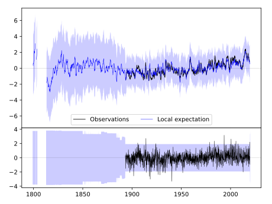
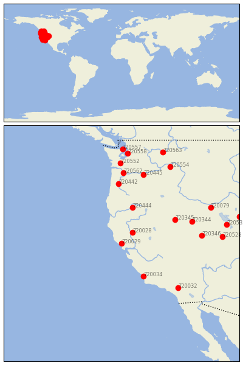
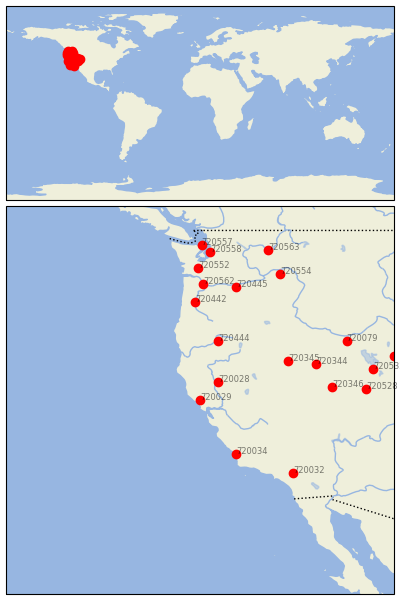

HEALDSBURG [USA]

 
| Neighbour | Name | Country | Distance | Lon/Lat | Years |
|---|
| 720029 | HEALDSBURG | USA | 0 | -122.9, 38.6 | 1893-2019 |
| 720028 | CHICO UNIV FARM | USA | 154 | -121.8, 39.7 | 1893-2019 |
| 720444 | KLAMATH FALLS 2 SSW | USA | 410 | -121.8, 42.2 | 1884-2019 |
| 720034 | SAN LUIS OBISPO POLY | USA | 415 | -120.7, 35.3 | 1887-2019 |
| 720345 | GOLCONDA | USA | 532 | -117.5, 41.0 | 1887-2019 |
| 720344 | ELKO RGNL AP | USA | 654 | -115.8, 40.8 | 1888-2019 |
| 720442 | CORVALLIS STATE UNIV | USA | 667 | -123.2, 44.6 | 1889-2019 |
| 720346 | MCGILL | USA | 705 | -114.8, 39.4 | 1888-2019 |
| 720032 | REDLANDS | USA | 714 | -117.2, 34.1 | 1892-2019 |
| 720445 | MORO | USA | 788 | -120.7, 45.5 | 1893-2019 |
| 720562 | VANCOUVER 4 NNE | USA | 789 | -122.7, 45.7 | 1849-2019 |
| 720079 | OAKLEY | USA | 860 | -113.9, 42.2 | 1893-2019 |
| 720528 | DESERET | USA | 885 | -112.7, 39.3 | 1891-2019 |
| 720552 | CENTRALIA | USA | 900 | -123.0, 46.7 | 1892-2019 |
| 720532 | TOOELE | USA | 932 | -112.3, 40.5 | 1895-2019 |
| 720554 | DAYTON 1 WSW | USA | 945 | -118.0, 46.3 | 1891-2019 |
| 720558 | SEATTLE URBAN SITE | USA | 1013 | -122.3, 47.7 | 1894-2019 |
| 720557 | PORT TOWNSEND | USA | 1056 | -122.8, 48.1 | 1859-2019 |
| 720593 | EVANSTON 1 E | USA | 1056 | -111.0, 41.3 | 1889-2019 |
| 720563 | WILBUR | USA | 1077 | -118.7, 47.8 | 1892-2019 |